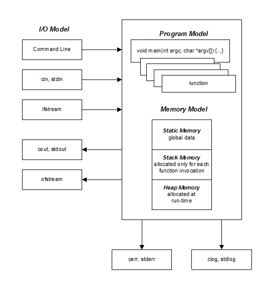
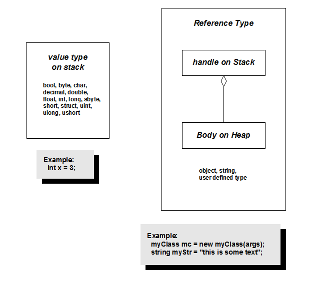

Object models define where objects can be stored, their lifetimes, and how they acquire and return resources needed for their operations. Object models also
affect the ability of a program to make copies of an instance.
Most programming language object models make a distinction between "value types" and "reference types" A value type can be copied or assigned,
and the result of those operations are two distinct instances that have the same state immediately following the operations, but may take on individual changes
to their states without affecting the other. Reference types are accessed through handles, e.g., references. Copying and assigning reference types results in
copying and assigning their handles, not their instances. So changes of state through one of the handles will be visible using the other handle - they both point
to the same instance after assignment or copying.
There are three types of object models you need to know about:
C++ Native Code
The C++ Programming Language was built, from the ground up, to support creation of user-defined value types. For this it supports copy construction
and copy assignment. If a class's members and bases all have value semantics, the compiler will generate default copy and assignment operations
that provide value semantics for the class, by doing member-wise copy and assignment. If a class composes reference types, then the class designer
overloads the class copy constructor and assignment operator to provide correct value semantics.

C++ programs can store instances of any type in static, stack, or heap memory. This includes user defined types as well as language primitives.
Storage in static memory persists for the lifetime of the program. Storage in stack memory persists while execution remains in the scope where
the object is created. Heap memory storage persists from the time of creation with a call to new until destruction caused by a call to delete.
For local objects1, allocation and deallocation of resources is all scope based. A native object allocates its resources in a constructor at the point of declaration
and deallocates its resources in a destructor. If the object resides in stack memory that happens when the thread of execution leaves the scope
in which the object was constructed. If the object resides in static memory the destructor is called when the program ends.
If the object resides in the native heap destruction happens when requested by the program with a call to delete or when the program ends.
This is a very natural and elegant way to manage resources.
C++ provides the ability to copy construct, copy assign, move construct, and move assign instances of a class that provides copy and move constructors and
copy and move assignment operator overloads. The copy constructor makes a new instance with initial state identical to the state of the source instance.
Copy assignment copies the state of the assignment source instance to the destination instance. Move operations are similar except that the source
gives up ownership of its state to the destination. Usually this can be done very efficiently, often with only a pointer swap.
As we discuss below, the Java and C# object models do not provide these capabilities.
Class Relationships
C# and Java Managed Code

Both these languages define two kinds of types: value types and reference types, each with its own object model. Value types are arithmetic types and structs.
Reference types are all instances of types defined by the language and the user with classes.
Value types are all stack or static based and have only a predefined default constructor. They have no destructors. Thus the memory they are allocated
is simply reallocated to other type instances when they go out of scope. A program can construct unique copies of value types2.
Managed programs can store handles to reference types in static and stack memory. Managed classes may compose handles to instances of reference types
on the managed heap. We say that the class "aggregates" the referenced instance in the managed heap.
Reference types can have parameterized constructors that allocate managed and unmanaged3 resources to the class. Java classes have finalizers but
no destructors. C# classes can define a destructor but that acts as a finalizer, e.g., is called by the garbage collector when the instance is
being deallocated.
In general, it is not possible to make a unique copy of a reference type without using serialization. Note that, unlike C++, C# and Java do not support the definition of a
copy constructor. The reason for this is that reference types are accessed through handles. Copying a handle just makes another reference
to the underlying object. If a class holds only value type data members, then it is possible to make a clone by creating a new object and copying
the source objects value members. That is what happens when you make a copy of a Java or C# string.
When a handle goes out of scope or is set to null its associated object is enqueued for garbage collection. When the collector
runs the object will be destroyed only if there are no other references pointing to the object. This is a non-deterministic process so the program
has no direct control over the deallocation of resources unless the object's class defines a Dispose method.
Dispose is used to return unmanaged
resources used by the class when called, but that does not deallocate the memory associated with the object. That can only be done by the
garbage collector. Also, unlike the C++ object model, every user must participate in calling the Dispose function. If the user forgets or doesn't
know the instance is disposable, then release of the unmanaged resources must wait for garbage collection.
Javascript
Javascript has value types, e.g., ints, bools, literal strings, and reference types which are instances that reside on a managed heap.
Javascript uses a prototype object model. New instances are created by cloning a prototype and removed from memory by garbage collection when all
references to them have been nulled or gone out of scope. Most applications of Javascript are hosted by browsers. However, in the Node.js framework, a host for
the Chrome V8 Javascript engine has been developed for Windows, Linux, and Unix applications. Node supports TCP communication and uses a single-threaded
message loop, similar to the loop used in virtually all GUI applications.
Javascript objects are dynamically typed. They behave very like C Language structs that contain instances or references to data and pointers to functions. New functions and
new data can be added to an instance at any time.
It is interesting to note that the .Net CLR, Java JVM, and Chrome V8 were all developed using the standard C++ programming language.
A local object is defined inside some scope, e.g., function scope or control scope.
Value types are, with one exception, blit-able, e.g., can be copied by copying memory. Structs are value types, but may not be blit-able
since the languages, suprisingly, allow structs to hold references.
Unmanaged resources are things like I/O streams, database connections, and socket handles.